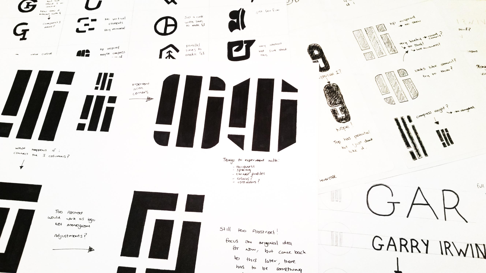
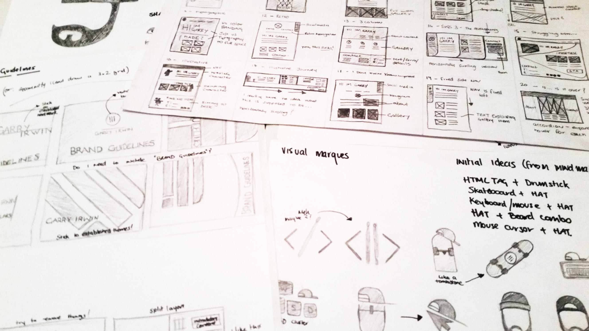
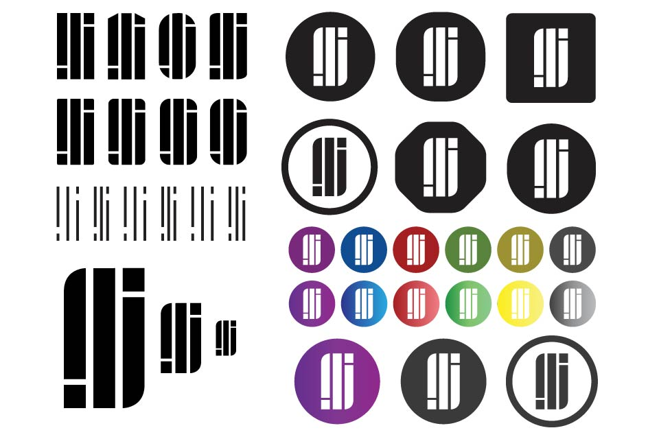
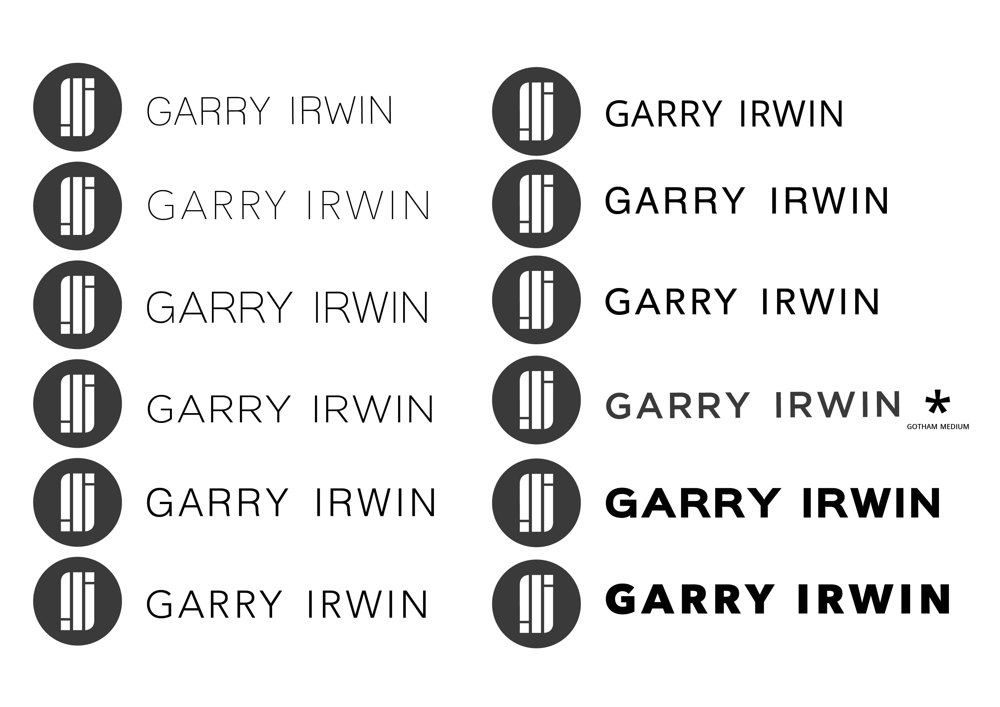
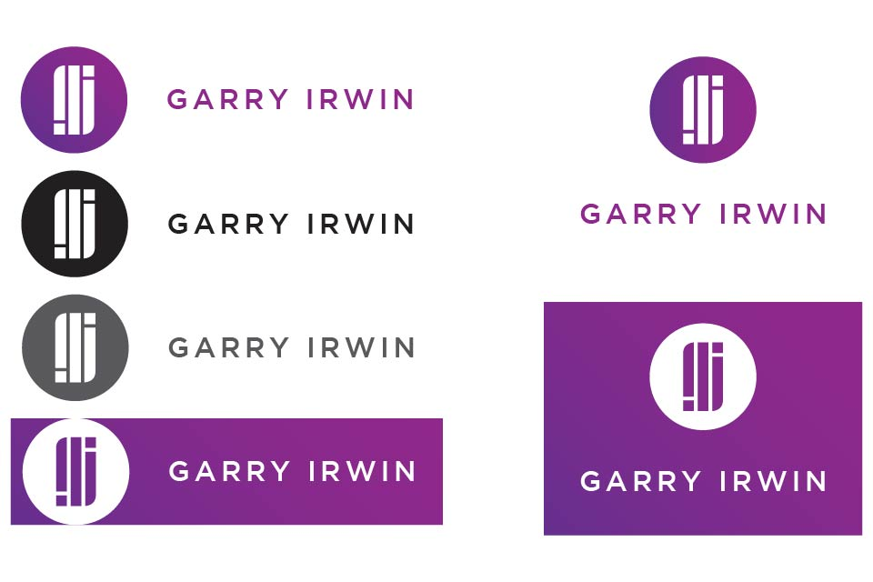
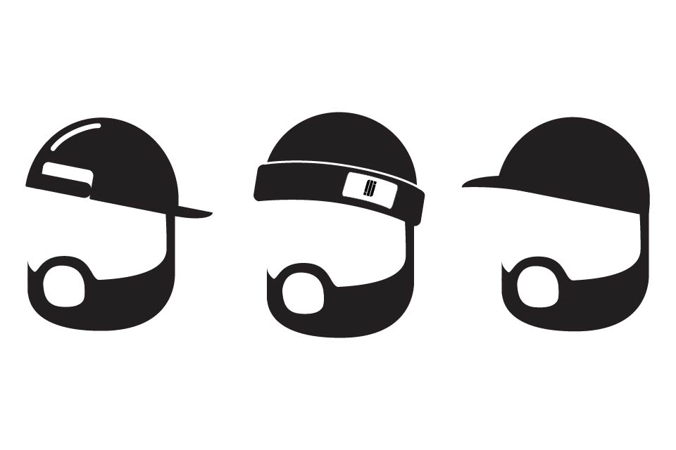

How do designers design for themselves? That's the question I was asked when I first started this project. The answer was slightly more involved that I initially thought - at first I was tasked with designing a monogram, wordmark and visual marque alongside a set of brand guidelines that spoke to who I was and how I would market myself, but I decided to take it just that little bit further with colour variations and visual extensions, like device wallpapers and patterns. I'm pretty happy with how it turned out, but there's always something that can be improved.
Personal branding is something that I needed but had no idea how to do. Since I was the client, I had free reign to do whatever I wanted, the only stipulations being that the finished product had to represent me and my personal design style.
Everything was done first on paper, just to get ideas out of my head and turn them into something tangible. Starting on paper is the best way to just quickly churn out ideas, it's not important that they're all great, just as long as you get one workable idea. For this project, it took a ton of sketches to get something that I was happy with.
 With sketches out of the way and an idea decided on, I took that daunting first step into software. This is always where most experimentation takes place. I tried different weights, containers, typefaces, positioning - everything - until I got a final idea.
   With some workable ideas created I could move on to refining and finalising them. I think the results speak for themselves.